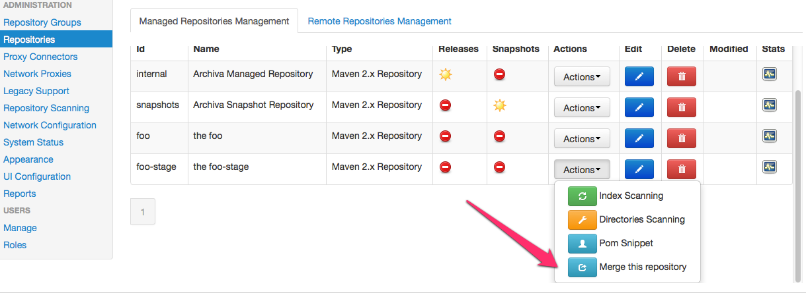
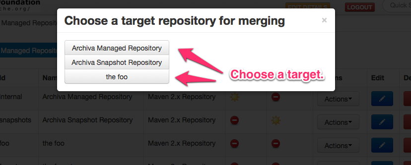

Staging Repositories
Starting with Archiva 1.4, staging repositories are supported. A staging repository is a repository you use to stage a release (while it undergoes testing and voting), before the release is officially announced and published to a releases repository where users can obtain it.
With the support of staging repositories comes the ability to merge repositories from the web UI. By merging, we mean promoting the artifacts in the staging repository to the managed repository. In the current implementation, a user with the System Administrator role can create and attach a staging repository to an existing managed repository. An attached staging repository is a shadow of its managed repository, meaning they have the same configuration.
We append -stage to the managed repository's ID to identify its staging repository. For example, repository test would have a staging repository called test-stage.
If you're creating a new managed repository, just tick the Create stage repository check box. Otherwise, if you already have an existing managed repository and you want to create a staging repository, just edit the managed repository's configuration and tick the Create stage repository checkbox, then save the configuration. A staging repository directory will be created beside (as a sibling of) the managed repository directory, again with -stage appended to the name.
Note: By un-ticking the Create stage repository checkbox, the user can delete the attached staging repository. If the managed repository is deleted, then its attached staging repository is also deleted.
The default snapshots and internal repositories do not have staging repositories configured by default, however they can be added by editing the repository configuration.
Populating the Staging Repository
The staging repository can be populated in the same way as a normal managed repository. You can configure your Maven build's distributionManagement section to deploy to the repository, or use Archiva's web-based upload feature.
Merging Repositories
To merge or promote the artifacts in a staging repository to the managed repository, just click the Merge this repository button in the repositories configuration page.
You will be able to select which target repository to use for merging
Archiva will check for conflicting artifacts between the two repositories, and list them (if it finds conflicts). The user will be asked to choose between two actions:
- Merge All - ignore all conflicting artifacts and perform merging for all.
- Merge With Skip - skip all conflicting artifacts and merge only the non-conflicting ones.
In future, we plan to enhance this by allowing a user to select only specific artifacts to merge.